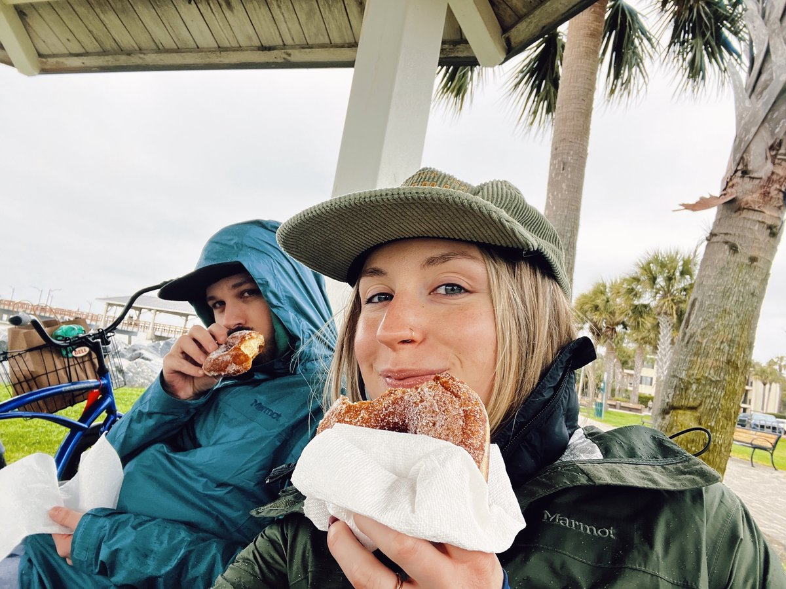
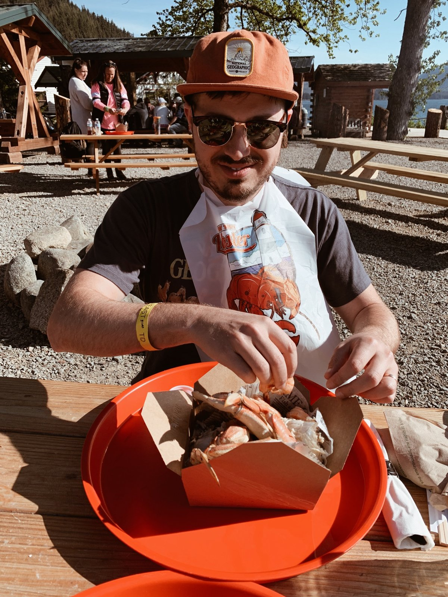
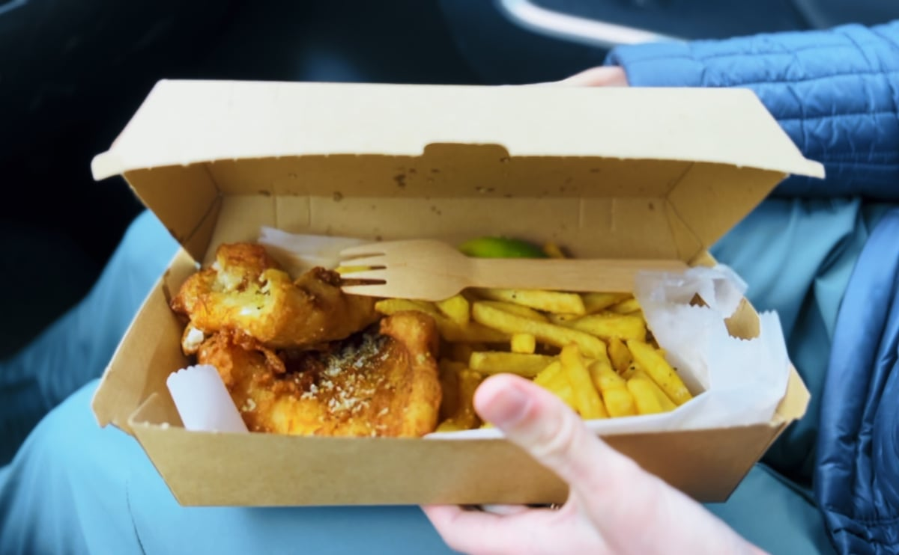
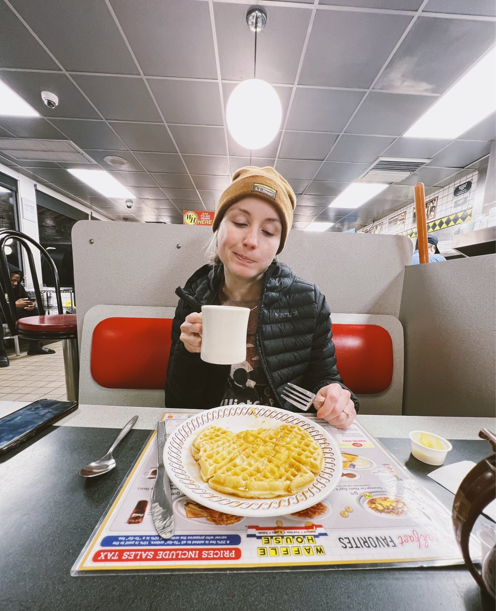
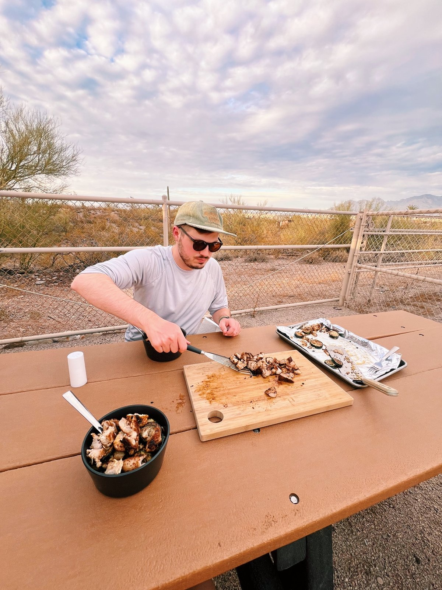
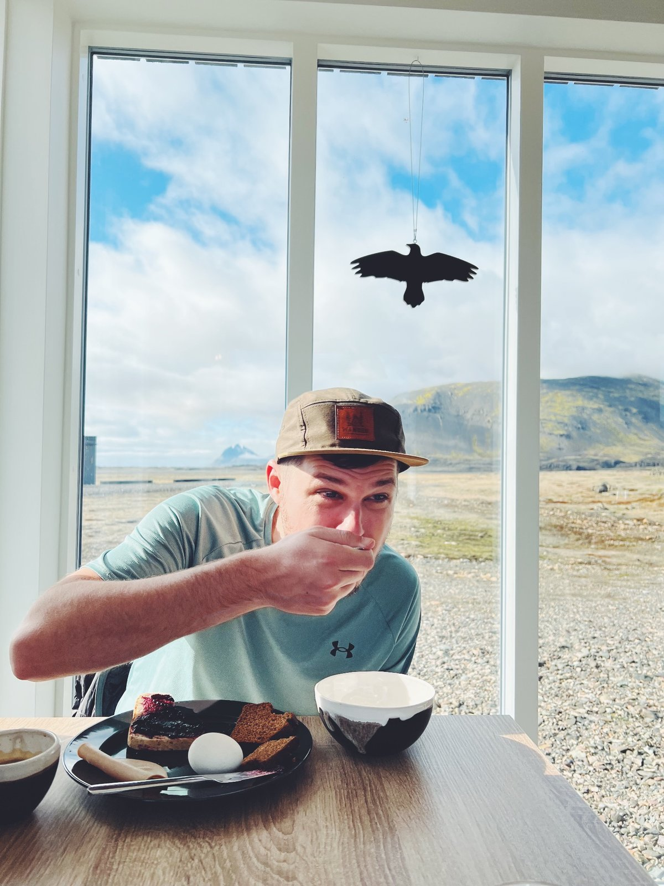
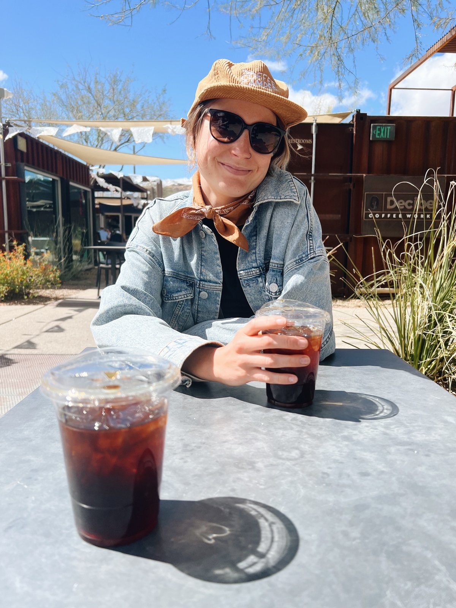
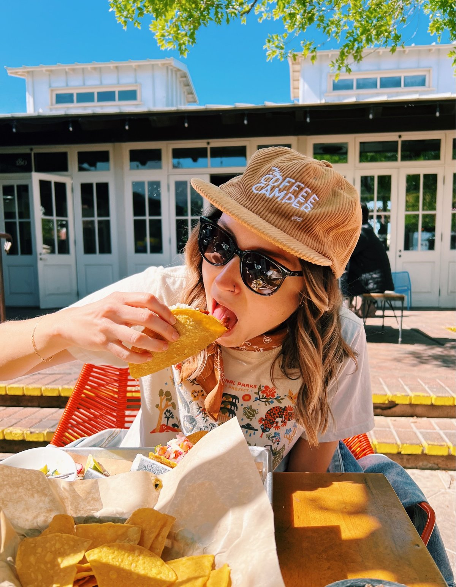
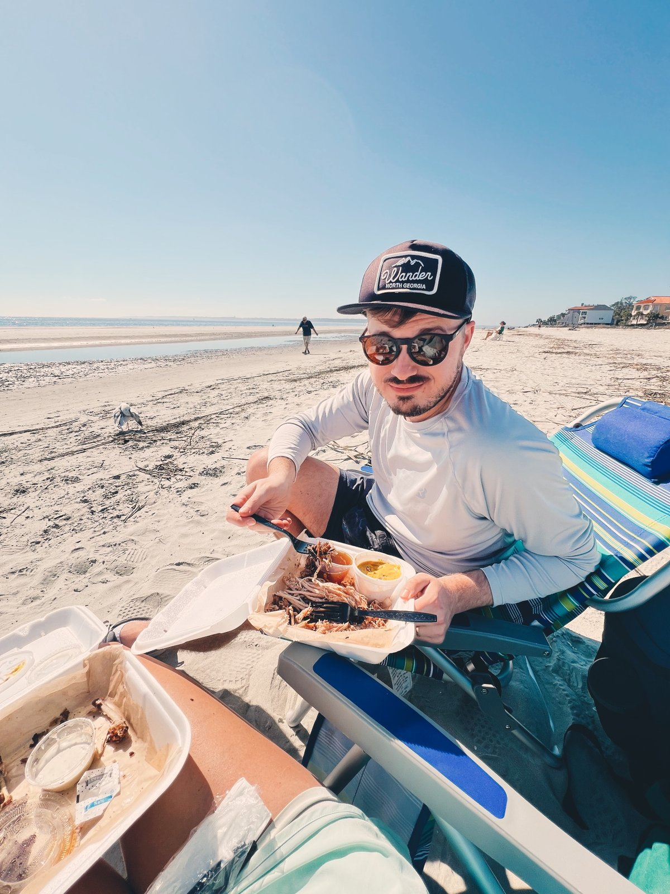
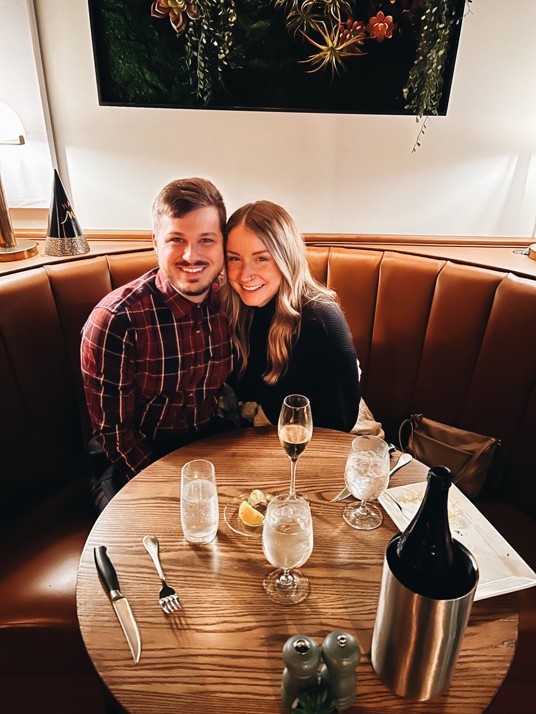

Our table, our recipes
The Solomons Cook
A shared cookbook for the two of us — everything we love to make, tweak, and make again.






A shared cookbook for the two of us — everything we love to make, tweak, and make again.
Cream and oat carry the interface. Espresso is text. Terracotta is the single action color — buttons, favorites, links. Sage marks dietary flags, teal is a rare accent (it shows up in your caps, plates, and cans), cognac warms photo captions and borders.
Fraunces is a warm, slightly retro serif that feels like a hand-me-down cookbook without being kitschy. It carries recipe titles and section headers.
Inter does all the working text — ingredients, steps, labels — because in the kitchen, legibility beats charm.
Both are free Google Fonts, so nothing to license.




Too busy — photos compete with text
The pick — texture without pull
Too washed — why have photos at all?
The photo wall lives only on the main page, fading into cream as you scroll. Interior pages — recipes, planner, search — are clean cream with no background imagery, so the food you're cooking never competes with the food in the photos. Recipe cards still show the recipe's own photo, since that's content, not decoration.
Labels and empty states use first-person-plural, casual language — "our favorites," "we haven't made this in a while," "add what we ate tonight." It's a household tool, not a food magazine.
Add to home screen with our own icon — opens full-screen like a native app, no browser chrome.
Recipes cache locally, so the cabin with no signal still gets dinner. Edits sync when back online.
Bottom tab bar in thumb reach, 44px+ touch targets, wake lock in cook mode so the screen never sleeps mid-recipe.